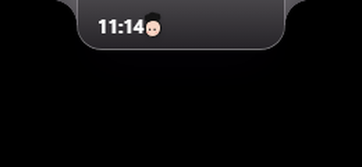

ASLI Intip 0.2.0-beta.2

Ukur: lebar 380px (state open saat screenshot) — tema kaca aktif: badan biru-abu
#3b4161, kaca putih REBUILD

Ukur: notch idle 150×36px di top-center + telinga 19px — sama dengan
--w:150 --h:36 dari CSS asli.